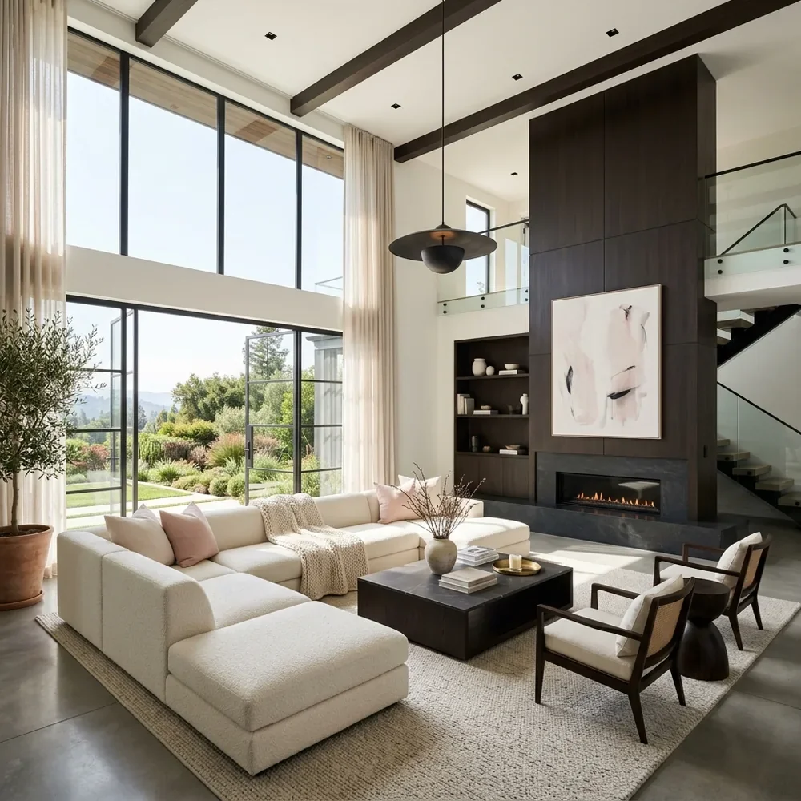
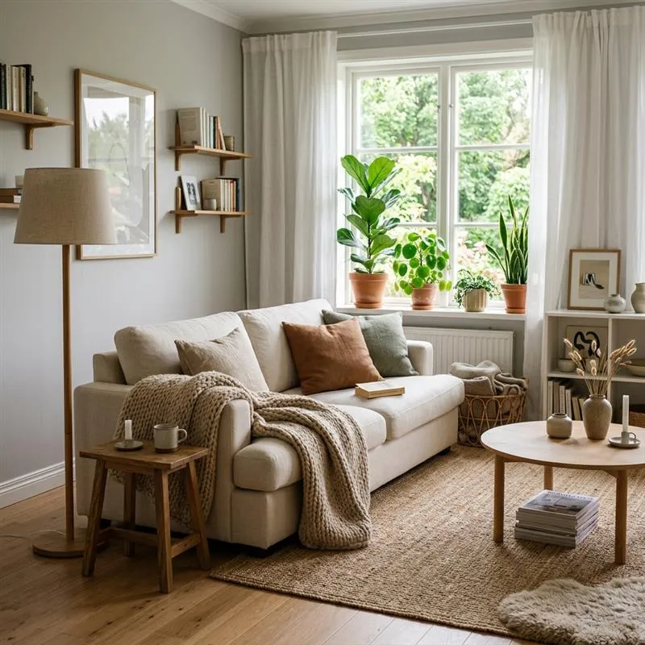
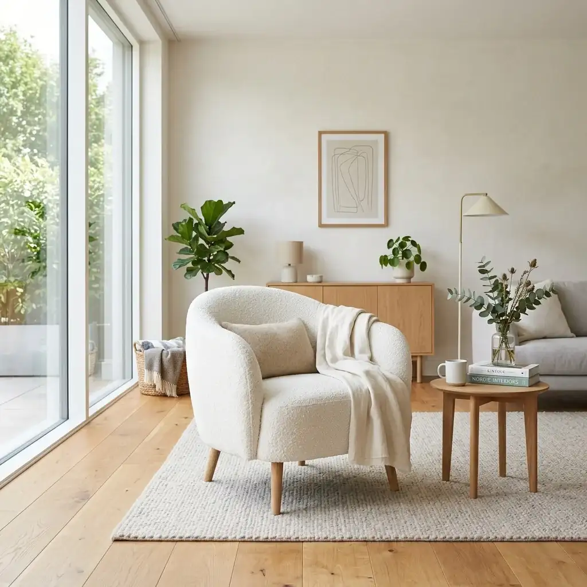
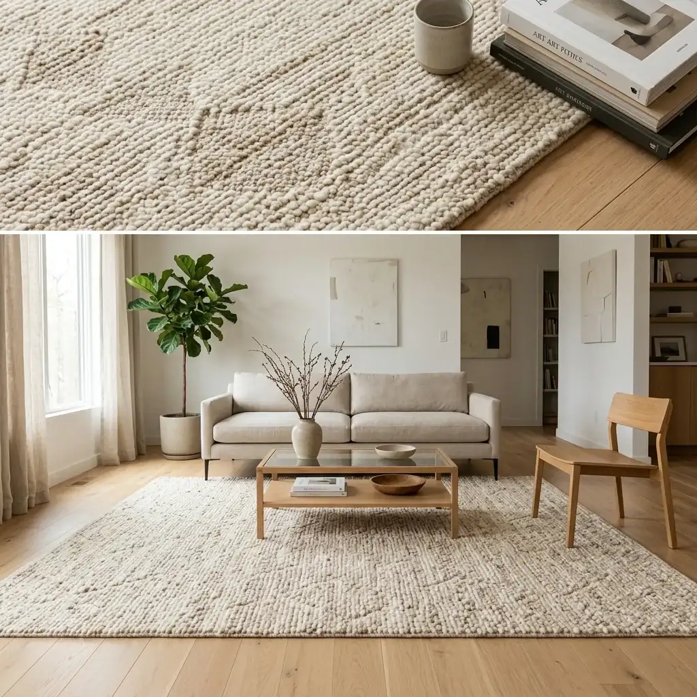
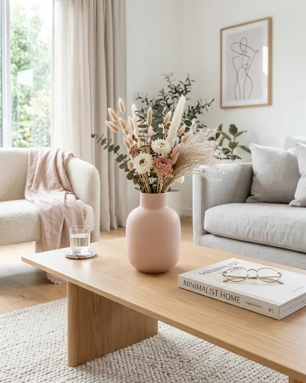
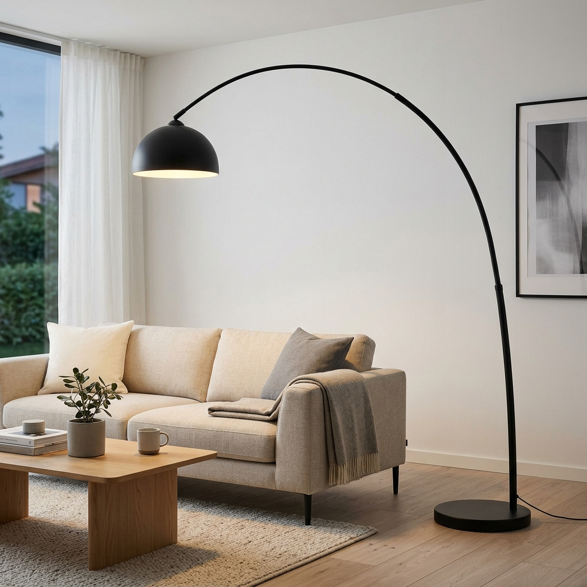
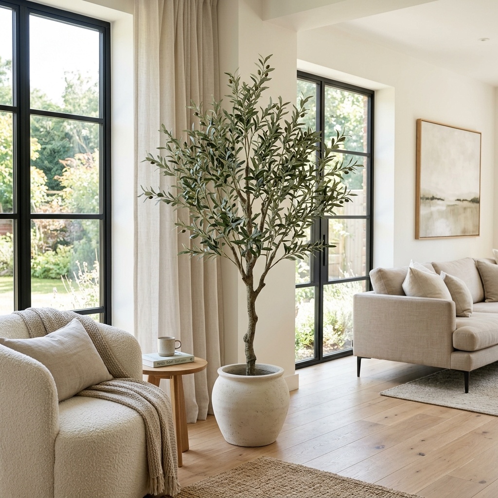

The Warm Minimalist Scandinavian Living Room: 9 Designer Rules for a Cozy, Clutter-Free Space (2026)
There is a common misconception that minimalism has to feel cold, sterile, or like an unlived-in art museum where you are afraid to spill coffee. But when you marry the clean architectural discipline of modern minimalism with the cozy, soulful comfort of Scandinavian hygge, magic happens.
A true minimalist Scandinavian living space is not about having zero possessions—it is about having intentional possessions that bring tactile comfort and visual calm to your daily life. It is the soothing feeling of walking into a room flooded with soft, warm daylight, kicking off your shoes onto a textured wool rug, and resting on a clean-lined sofa wrapped in pure Belgian linen.
If you have been wondering which solution is best for creating a minimalist Scandinavian living space without spending tens of thousands of dollars on custom Nordic joinery, you have arrived at the definitive blueprint. Below, I'm sharing the exact 9 designer rules I use when styling real homes into serene Scandinavian sanctuaries.

Which Solution is Best for Creating a Minimalist Scandinavian Living Space?
The most effective solution for creating a minimalist Scandinavian living space is the 70/30 "Warm Functionalism" rule: dedicate 70% of your room to clean minimalist architecture (low-profile silhouette furniture, hidden closed storage, uncluttered walkways, and 30-40% empty negative space) and 30% to organic Scandinavian warmth (raw blonde wood, layered warm 2700K ambient lighting, and rich tactile textiles like wool, bouclé, and washed linen).
Ground the Space with Blonde & Pale Woods
Traditional minimalist spaces frequently rely on stark polished concrete, mirrored glass, or high-contrast black steel. Scandinavian minimalism, by contrast, takes its cues directly from Nordic birch and pine forests.
To warm up your living room instantly, anchor your layout around pale, natural timbers such as white oak, ash, beech, or natural birch. Unlike dark espresso stains or shiny orange finishes from the early 2000s, pale blonde wood retains a matte, raw look that bounces natural daylight effortlessly across the room.

DESIGNER STYLING TIP
Keep your wood tones cohesive. If your flooring has cool blonde undertones, avoid pairing it with red-toned mahogany or dark walnut. Sticking to 1 or 2 complementary pale wood finishes creates an expansive, uninterrupted visual flow.
Apply the 70/30 Warm Minimalist Balance
The single biggest mistake homeowners make when attempting Scandinavian minimalist design is swinging too far into one extreme: either stripping the room down until it feels like an empty doctor's office, or piling on so many faux-fur rugs and fairy lights that it turns into a chaotic cluttered cabin.
I advise my private styling clients to strictly follow the 70/30 rule:
- 70% Minimalist Discipline: Uncluttered horizontal surfaces, concealed storage units, clean straight sightlines, and generous open floor space around walkways.
- 30% Scandinavian Hygge: Soft, tactile textural accents—a waffle-knit throw tossed on an armchair, a scented cedar candle, a textured ceramic vase, and natural linen drapes.
Choose Low-Profile Furniture with Organic Curves
In Scandinavian design, furniture is meant to be deeply ergonomic and deeply livable. Rather than rigid, boxy sectionals that crowd the walls, opt for low-profile sofas and lounge chairs that sit lower to the ground.
Lower furniture heights make standard 8-foot or 9-foot ceilings feel dramatically taller because they leave abundant vertical wall space open. To soften the architectural lines, incorporate at least one or two pieces with soft organic curves—such as a curved bouclé accent chair or an oval pebble-shaped coffee table.

The Ideal Scandinavian Sofa Formula:
- Fabric: Textured oatmeal, cream linen, or performance chenille. Avoid shiny faux leather.
- Legs: Tapered cylindrical wooden legs that lift the sofa off the ground, allowing floor light to pass underneath.
- Cushions: Generous, supportive bench cushions rather than overstuffed multi-pillow backs.
Layer Tactile "Touchpoints" Instead of Visual Knick-Knacks
When you cannot rely on loud wall colors or busy gallery walls, texture becomes your visual voice. In a monochrome or neutral room, contrasting textures trick the human eye into feeling richness without clutter.

Every Scandinavian minimalist living room should feature these 4 distinct tactile layers:
- The Floor Layer: An oversized high-pile wool rug or a ribbed flatweave in warm cream. Your rug should be large enough that all front sofa legs rest comfortably on it.
- The Seating Layer: Textured bouclé or slubby washed linen cushion covers.
- The Throw Layer: A chunky ribbed knit or woven alpaca throw casually draped over one sofa arm.
- The Hard Surface Layer: Honed travertine, unpolished sandstone, or matte stoneware on the coffee table.
Master Negative Space on Coffee Tables & Credenzas
Look at your coffee table right now. Is it covered with TV remotes, half-read mail, loose cables, and three different coasters? In a Scandinavian minimalist home, horizontal surfaces are treated as sacred sanctuaries of negative space.

THE 60/40 COFFEE TABLE FORMULA
Never fill more than 40% of your coffee table surface. Leave the remaining 60% completely empty. Style the 40% using the Rule of Three: one stack of 2 neutral architectural books, one sculptural stoneware bowl (which holds remotes out of sight), and one scented beeswax candle.
For more in-depth coffee table styling formulas, read our step-by-step companion guide on How to Style a Coffee Table Like an Interior Designer.
Create a 2700K Ambient "Lighting Grid"
In Scandinavia, winter days can have as little as 4 hours of daylight. Because of this, lighting is not treated as an afterthought—it is an art form. The single fastest way to destroy a minimalist living room is flipping on a harsh, cool-white (5000K) ceiling fixture that casts blue shadows.

The Golden Nordic Lighting Rules:
- Bulb Temperature: Every bulb in your living room must be between 2700K and 3000K (Warm White). This replicates the gentle golden glow of late-afternoon sunlight.
- The 3-Point Triangle: Never rely solely on an overhead ceiling pendant. Create a lighting triangle: an arched floor lamp next to the reading chair, a small table lamp on a credenza, and soft cordless accent lights on floating shelves.
- Paper & Fabric Shades: Rice paper pendants (like Noguchi-style lanterns) softly diffuse raw bulb glare into a luminous, cloud-like wash across the ceiling.
Frame Windows with Floor-to-Ceiling Sheer Linen
Heavy velvet curtains and cheap plastic Venetian blinds block natural light and visually chop up your wall height. Scandinavian interiors prioritize letting light pour deep into the room.
Install semi-sheer, unbleached linen curtains. Mount the curtain rod as high and wide as possible—ideally 2 to 3 inches below the ceiling crown and extending 8 to 12 inches past each window frame. When open, the drapes sit outside the window frame, maximizing every square inch of sunlight while making the window look twice as expansive.
Enforce Closed Storage & Cable Invisibility
You cannot have a serene Scandinavian aesthetic if your television console looks like a nest of tangled power cords and PlayStation controllers. Functional minimalism requires smart, concealed storage.
THE SECRET TO INVISIBLE STORAGE
Invest in a floating or wall-mounted media credenza with flat wooden front panels and integrated push-to-open latches (no external handles). Run your television and game cables through in-wall conduit or paintable floor raceways. When every device has a hidden home behind closed doors, your living room naturally remains 100% photo-ready with zero maintenance.
If you love clean, handleless cabinetry, explore our viral guide on How Modern Push Latches Solve Cabinet Clutter.
Introduce One Large Living Organic Statement
Instead of scattering five or six tiny succulent pots on random surfaces (which creates visual noise), anchor your Scandinavian living room with one single, statuesque organic focal point.

A tall potted plant—such as a potted European Olive tree, Ficus Audrey, or a large Fiddle Leaf Fig—housed in a raw terracotta or unglazed ceramic planter connects the indoors directly with nature. The green foliage adds life and vitality to an otherwise neutral color scheme without introducing distracting pattern or color clash.
Frequently Asked Questions
Which solution is best for creating a minimalist Scandinavian living space?
The best solution is the "Warm Functionalism" formula: ground the room with a low-profile sofa in textured neutral linen, use blonde wood furniture (white oak or ash), maximize natural light with sheer curtains, layer warm 2700K ambient lighting, and conceal daily clutter inside closed Scandinavian credenzas.
How do you make a minimalist Scandinavian living room feel cozy without clutter?
To add warmth without clutter, focus on tactile textures rather than decorative knick-knacks. Use chunky wool rugs, bouclé accent chairs, unbleached linen throws, natural travertine accents, and a large sculptural plant like an olive tree or fiddle-leaf fig.
What colors are best for a Scandinavian minimalist living room?
Warm off-whites (chalk, alabaster), soft oatmeals, warm putty greiges, and light blonde woods form the foundation. Soft sage green, muted terracotta, or charcoal accents can be introduced in small doses for depth.
What is the 70/30 rule in warm minimalist interior design?
The 70/30 rule balances 70% clean minimalist structure (clean lines, negative space, neutral walls, hidden storage) with 30% organic warmth (tactile textiles, raw timber grain, textured ceramics, and ambient lamp lighting).
What is the difference between Japandi and Scandinavian design?
Scandinavian design focuses primarily on blonde timbers (pine, ash), bright airy spaces, and cozy hygge textiles. Japandi blends Scandinavian functionality with Japanese wabi-sabi philosophy, incorporating darker walnut woods, lower floor-level furniture, and deeper muted earthy tones.